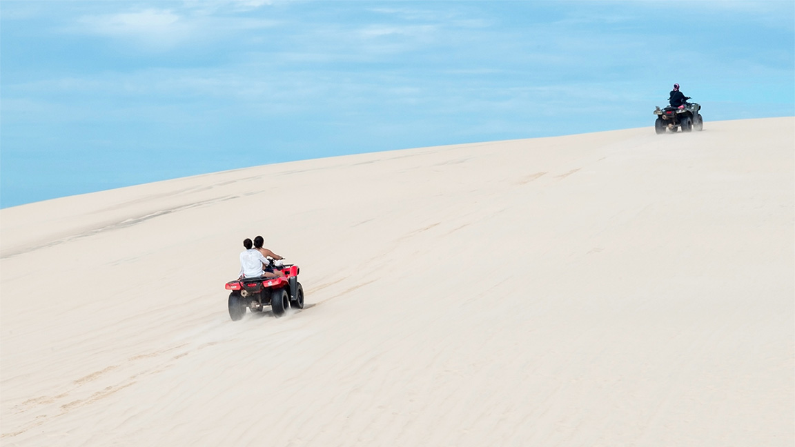

2 dias e 1 noite Barreirinhas

1º Dia: Início da jornada rumo a Barreirinhas entre 6h30 e 7h20 da manhã, dependendo do local que o cliente estiver hospedado, em veículo sedan, van ou microônibus. A duração da viagem é de aproximadamente 4 horas, com uma parada no supermercado, para adquirir água e lanc...
Continue lendo.2 dias e 1 noite Barreirinhas (combo c/ quadriciclo e lancha no 2º dia)
1º Dia:Início da jornada rumo a Barreirinhas entre 6h30 e 7h20 da manhã, dependendo do local que o cliente estiver hospedado, em veículo sedan, van ou microônibus. A duração da viagem é de aproximadamente 4 horas, com uma parada no supermercado, para adquirir água e lanc...
Continue lendo.